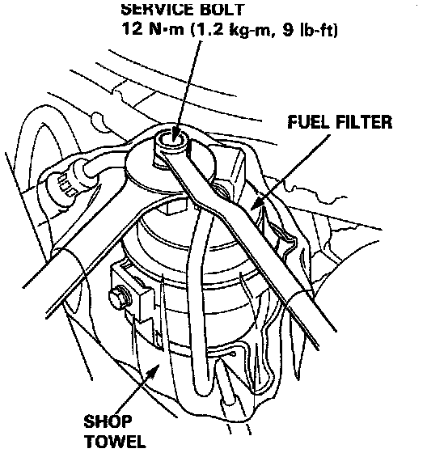

Fuel Pressure Relief Information

WARNING: Do not smoke while working on the fuel system. Keep open flames or sparks away from your work area. Be sure to relieve fuel pressure while the engine is off.
Before disconnecting fuel pipes or hoses, release pressure from the system by loosening the 6 mm service bolt on top of the fuel filter.
1. Disconnect the battery negative cable from the battery negative terminal.
2. Remove fuel fill cap.
3. Use a box end wrench on the 6 mm service bolt at the fuel filter, while holding the special banjo bolt with another wrench.
4. Place a rag or shop towel over the 6 mm service bolt.
5. Slowly loosen the 6 mm service bolt one complete turn.
NOTE: A fuel pressure gauge can be attached at the 6 mm service bolt hole. Always replace the washer between the service bolt and the special banjo bolt, whenever the service bolt is loosened to relieve fuel pressure. Replace all washers whenever the bolts are removed to disassemble parts.
6. After work has been completed, tighten the service bolt on the fuel filter to 9 ft. lb.
7. Turn on ignition but do not start engine to allow fuel presure to build up.
8. Check for leaks prior to starting the engine.